Missão 3
Apresentação Unidade 3
Product Backlog Building (PBB)
O Product Backlog Building (PBB) é um método utilizado para criar e elaborar um Product Backlog de forma colaborativa. O Canvas PBB é uma ferramenta que facilita esse processo. O principal objetivo do PBB é auxiliar na construção e refinamento do Product Backlog, garantindo um entendimento compartilhado do produto entre todos os envolvidos e preparando o backlog para que a equipe possa iniciar o trabalho de forma ágil e eficiente.
O PBB é realizado através de uma dinâmica prática, onde todos os participantes do projeto se envolvem na criação de um backlog eficaz e colaborativo. Essa dinâmica ajuda a esclarecer as histórias de usuário e a organizar o backlog dos times, utilizando o Canvas PBB como uma ferramenta de facilitação.
Como parte de uma atividade proposta pelo professora Critiane, criamos um PBB para o nosso projeto, o RPGym. Utilizamos esse estudo de forma prática para aprender a planejar e estruturar uma solução de forma organizada e colaborativa.
MIRO com o PBB feito pela Centelha da Revolução
Retirados do MIRO, os tópicos abaixo são capturas de cada parte do canvas
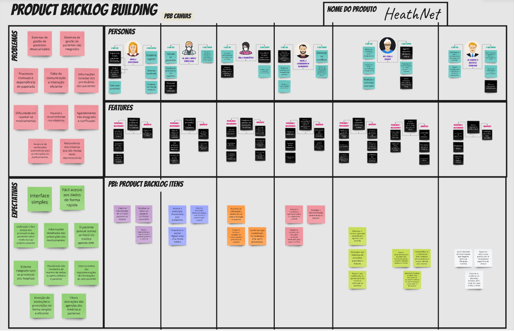
HeathNet
A HealthNet, que opera no setor de saúde, está enfrentando desafios significativos, especialmente na eficiência dos seus processos internos, na comunicação entre diferentes departamentos e na satisfação dos pacientes. Esses problemas mostram que é necessário revisar e otimizar suas práticas, além de adotar soluções tecnológicas que possam integrar e melhorar a gestão das atividades.
Entre as principais necessidades da HealthNet estão: aprimorar a comunicação interna, padronizar os processos operacionais e criar um sistema centralizado para acesso rápido e eficiente às informações dos pacientes. Além disso, há uma demanda por ferramentas que ajudem na análise de dados, com o objetivo de melhorar a tomada de decisões e personalizar o atendimento aos pacientes.
Problemas apontados
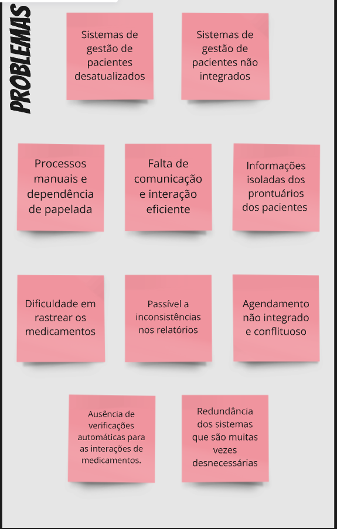
- Sistemas de gestão de pacientes desatualizados;
- Sistemas de gestão de pacientes não integrados;
- Processos manuais e dependência de papelada;
- Falta de comunicação e interação eficiente;
- Informações isoladas dos prontuários dos pacientes;
- Dificuldade em rastrear os medicamentos;
- Passível a inconsistências nos relatórios;
- Agendamento não integrado e conflituoso;
- Ausência de verificações automáticas para as interações de medicamentos;
- Redundância dos sistemas que são muitas vezes desnecessárias.
Expectativas
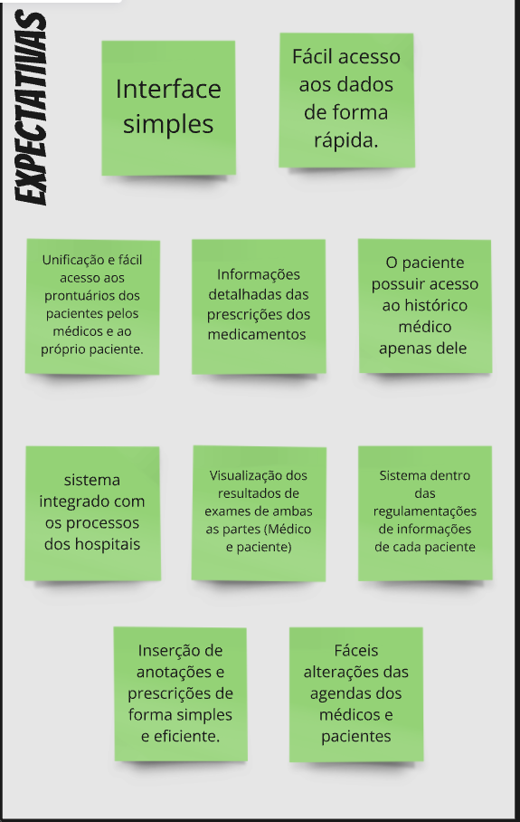
- Interface simples;
- Fácil acesso aos dados de forma rápida;
- Unificação e fácil acesso aos prontuários dos pacientes pelos médicos e ao próprio paciente;
- Informações detalhadas das prescrições dos medicamentos;
- O paciente possuir acesso ao histórico médico apenas dele;
- Sistema integrado com os processos dos hospitais;
- Visualização dos resultados de exames de ambas as partes (Médico e paciente);
- Sistema dentro das regulamentações de informações de cada paciente;
- Inserção de anotações e prescrições de forma simples e eficiente;
- Fáceis alterações das agendas dos médicos e pacientes.
Personas
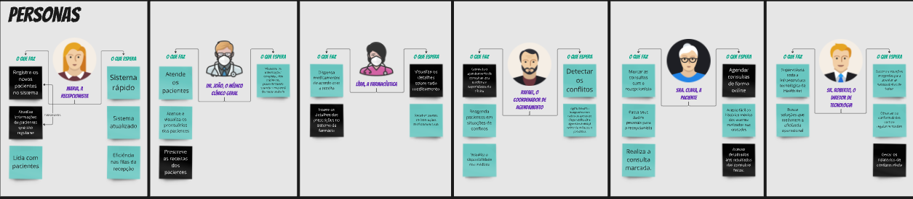
Maria, a Recepcionista
O que faz:
- Registra os novos pacientes no sistema;
- Atualiza informações de pacientes que são regulares;
- Lida com pacientes;
Necessidades
- Sistema rápido;
- Sistema atualizado.
- Eficiência nas filas da recepção.
Dr.João, o Médico Clínico Geral
O que faz:
- Atende os pacientes;
- Visualiza os prontuários dos pacientes;
- Prescreve as receitas dos pacientes.
Necessidades
- Visualizar as informações completas dos pacientes, potencializando quando o mesmo é de outra unidade.
Lívia, a Farmacêutica
O que faz:
- Dispensa medicamentos de acordo com a receita;
- Insere os detalhes das prescrições no sistema da farmácia.
Necessidades
- Visualiza os detalhes sobre cada medicamento;
- Receber alertas de interações medicamentosas.
Rafael, o Coordenador de Agendamento
O que faz:
- Gerencia o agendamento de consultas dos médicos e especialistas da clínica;
- Reagenda pacientes em situações de conflitos;
- Visualiza a disponibilidade dos médicos.
Necessidades
- Detectar os conflitos;
- Agendamento integrados com todos os dados de disponibilidade e agendamentos já feitos de médicos e pacientes.
Sra. Clara, a Paciente
O que faz:
- Marcar as consultas com a recepcionista;
- Passa seus dados pessoais para a recepcionista;
- Realiza a consulta marcada.
Necessidades
- Agendar consultas de forma online;
- Acesso fácil ao histórico médico dos exames realizados nas unidades;
- Acesso detalhados aos resultados das consultas feitas.
Sr. Roberto, o Diretor de tecnologia
O que faz:
- Supervisiona toda a infraestrutura tecnológica da HealthNet;
- Busca soluções que melhorem a eficiência operacional.
Necessidades
- Encontra soluções integradas para atender as necessidades de todos;
- Observar as conformidades com as regulamentações;
- Gerar os relatórios de conformidade.
Features
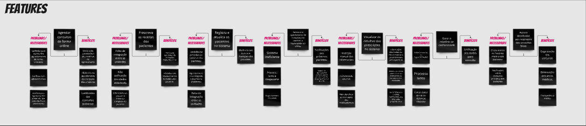
Features derivadas da Recepcionista
Registra e atualiza os pacientes no sistema
Problemas/Necessiadades:
- Lentidão na pesquisa do histórico dos pacientes;
- Agendamento não integrado e passíveis a problemas;
- Falta de integração entre as unidades.
Benefícios:
- Eficiência nas buscas e inserções dos pacientes.
Features derivadas do Médico
Prescreve as receitas dos pacientes
Problemas/Necessiadades:
- Falta de integração entre as unidades;
- Não unificação dos dados essenciais;
- Dificuldade em acessar o histórico completo do paciente.
Benefícios
- Verificação automática de interações medicamentosas;
- Histórico dos medicamentos tomados pelo paciente.
Features derivadas da Farmacêutica
Visualizar os detalhes das prescrições no sistema
Problemas/Necessiadades:
- Inserção manual das informações;
- Probabilidade de erros;
- Não identificar as interações dos medicamentos.
Benefícios
- Informações detalhadas dos medicamentos a serem tomadas para o paciente;
- Informações clara sobre o uso dos medicamentos nas prescrições realizadas; Emitir alertas de conflitos medicamentosos para evitar possíveis erros.
Acesso detalhados aos resultados das consultas feitas
Problemas/Necessiadades:
- O não acesso ao histórico médico dos pacientes;
- Notificações sobre consultas próximas dos pacientes;
Benefícios
- Organização das consultas;
- Diminuição dos erros médicos;
- Transparência médica.
Features derivadas do Coordenador de Agendamento
Gerenciar o agendamento de consultas dos médicos e especialistas da clínica
Problemas/Necessiadades:
- Sistema ineficiente;
- Processo lento e desgastante;
- Reagendamentos frequentes.
Benefícios
- Notificações dos próximos pacientes;
- Sistema de agendamento unificado que vá permitir os ajustes de forma eficiente e simples.
Features derivadas da Paciente
Agendar consultas de forma online
Problemas/Necessiadades:
- Lentidão para acesso dos agendamentos de outras unidades;
- Conflitos com agendamentos;
- Lentidão para agendamentos presencias por conta da fila de atendimento.
Benefícios
- Diminuição considerável dos conflitos de agendamento;
- Eficiência no atendimento da recepção das unidades;
- Lembretes das consultas próximas.
Features derivadas do Diretor de Tecnologia
Gerar o relatório de conformidade
Problemas/Necessiadades:
- Suscetível a erros de regulamentações;
- Processo lento;
- Coleta dados de vários sistemas distintos.
Benefícios
- Unificação dos dados para consulta.
Product Backlog Itens
Feature: Agendar consultas de forma online
- Selecionar o horário disponível desejado para agendar uma consulta;
- Consultar um histórico de consultas passadas e futuras;
- Receber uma confirmação do agendamento via e-mail ou notificação no aplicativo.
Feature: Prescreve as receitas dos pacientes
- Preencher e assinar digitalmente uma receita médica;
- Acessar a prescrição diretamente pela plataforma;
- Enviar a prescrição diretamente para uma farmácia parceira pelo sistema.
Feature: Registra e atualiza os pacientes no sistema
- Inserir as informações de um novo paciente no sistema;
- Atualizar os dados do paciente em tempo real conforme necessário;
- Buscar rapidamente o registro de um paciente existente no sistema.
Feature: Gerenciar o agendamento de consultas dos médicos e especialistas da clínica
- Ajustar os horários das consultas conforme necessário para evitar conflitos;
- Acessar e visualizar a agenda de todos os médicos da unidade;
- Atualizar a disponibilidade diretamente no sistema.
Feature: Visualizar os detalhes das prescrições no sistema
- Visualizar as informações detalhadas de cada prescrição no sistema;
- Acessar o histórico completo de medicamentos prescritos ao paciente; Confirmar que a prescrição foi recebida e está sendo processada.
Feature: Gerar o relatório de conformidade
- Gerar relatórios de conformidade que integrem dados de diferentes sistemas;
- Exportar os relatórios em diferentes formatos (PDF, Excel, etc.) para análise externa; Ajustar os relatórios de acordo com as necessidades específicas da unidade.
Feature: Acesso detalhados aos resultados das consultas feitas
- Acessar detalhadamente os resultados das consultas passadas, incluindo relatórios médicos e exames;
- Compartilhar os resultados de suas consultas diretamente com outros médicos pelo sistema; Organizar em pastas visualizar seus resultados de consultas e exames de maneira clara e estruturada na plataforma.
PBI Priorizado utilizando COORG
Para realizar a priorização dos itens levantados do backlog, utilizamos o método COORG. O cálcuki dessa prioridade está descrito na tabela a seguir:
| Classificação | |||||
|---|---|---|---|---|---|
| Frequência de Uso | H:5 | D:4 | S:3 | M:2 | T:1 |
| Valor de negócio | - | - | A:3 | M:2 | B:1 |
Formula de prioridade (+) frequência (+) valor
US's e Critérios de Aceitação
Épico: Gestão de Pacientes pela Recepção
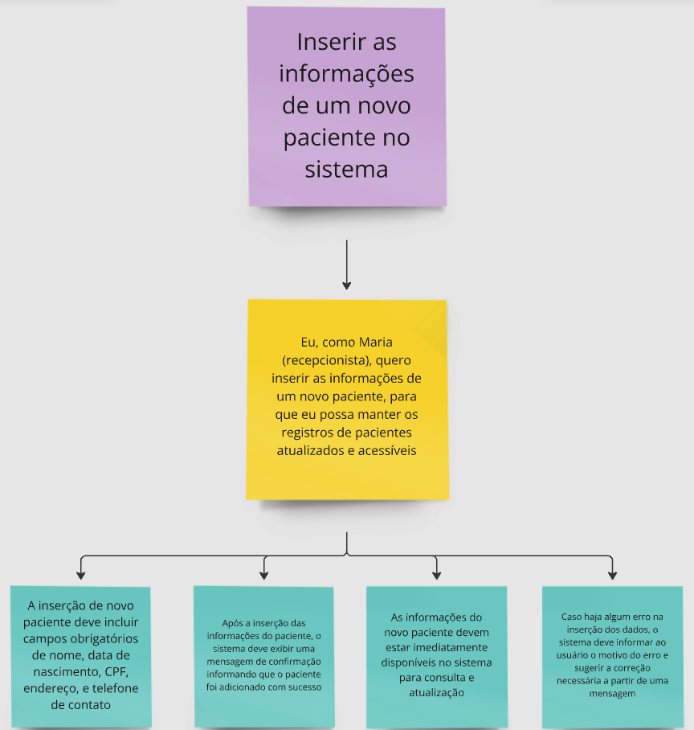
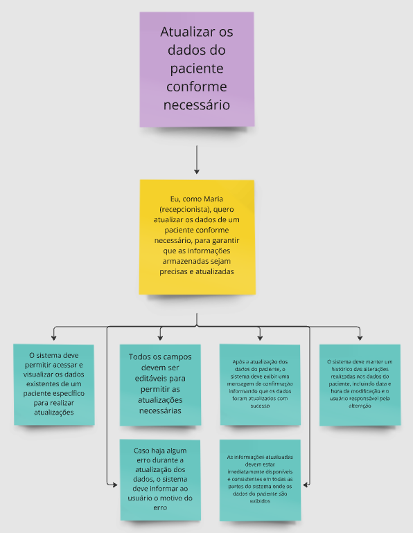
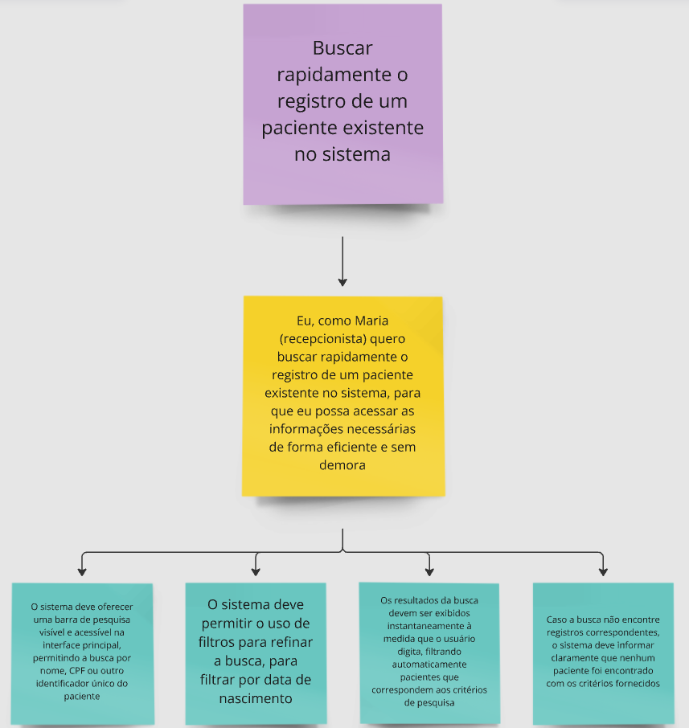
Critérios de aceitação do épico
US1: Eu, como Maria (recepcionista), quero inserir as informações de um novo paciente, para que eu possa manter os registros de pacientes atualizados e acessíveis
- A inserção de novo paciente deve incluir campos obrigatórios de nome, data de nascimento, CPF, endereço, e telefone de contato;
- Após a inserção das informações do paciente, o sistema deve exibir uma mensagem de confirmação informando que o paciente foi adicionado com sucesso;
- As informações do novo paciente devem estar imediatamente disponíveis no sistema para consulta e atualização;
- Caso haja algum erro na inserção dos dados, o sistema deve informar ao usuário o motivo do erro e sugerir a correção necessária a partir de uma mensagem.
US2: Eu, como Maria (recepcionista), quero atualizar os dados de um paciente conforme necessário, para garantir que as informações armazenadas sejam precisas e atualizadas
- O sistema deve permitir acessar e visualizar os dados existentes de um paciente específico para realizar atualizações;
- Todos os campos devem ser editáveis para permitir as atualizações necessárias;
- Após a atualização dos dados do paciente, o sistema deve exibir uma mensagem de confirmação informando que os dados foram atualizados com sucesso;
- O sistema deve manter um histórico das alterações realizadas nos dados do paciente, incluindo data e hora da modificação e o usuário responsável pela alteração.
US3: Eu, como Maria (recepcionista) quero buscar rapidamente o registro de um paciente existente no sistema, para que eu possa acessar as informações necessárias de forma eficiente e sem demora
- O sistema deve oferecer uma barra de pesquisa visível e acessível na interface principal, permitindo a busca por nome, CPF ou outro identificador único do paciente;
- O sistema deve permitir o uso de filtros para refinar a busca, para filtrar por data de nascimento;
- Os resultados da busca devem ser exibidos instantaneamente à medida que o usuário digita, filtrando automaticamente pacientes que correspondem aos critérios de pesquisa;
- Caso a busca não encontre registros correspondentes, o sistema deve informar claramente que nenhum paciente foi encontrado com os critérios fornecidos.
Épico: Prescrição e Dispensação de Medicamentos
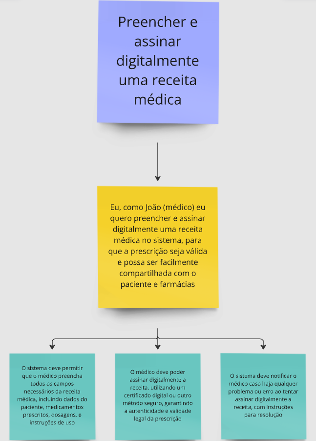
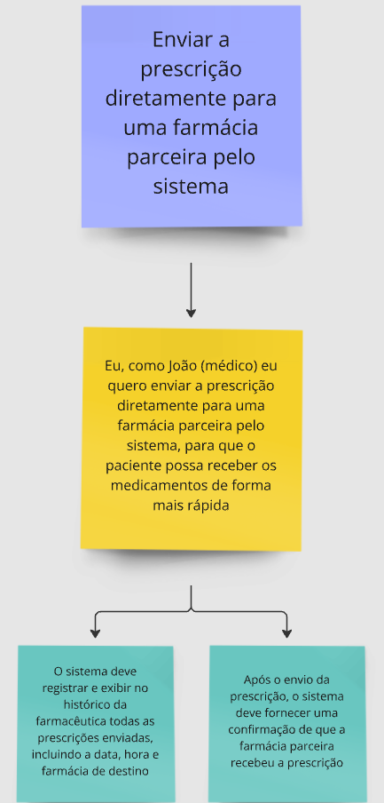
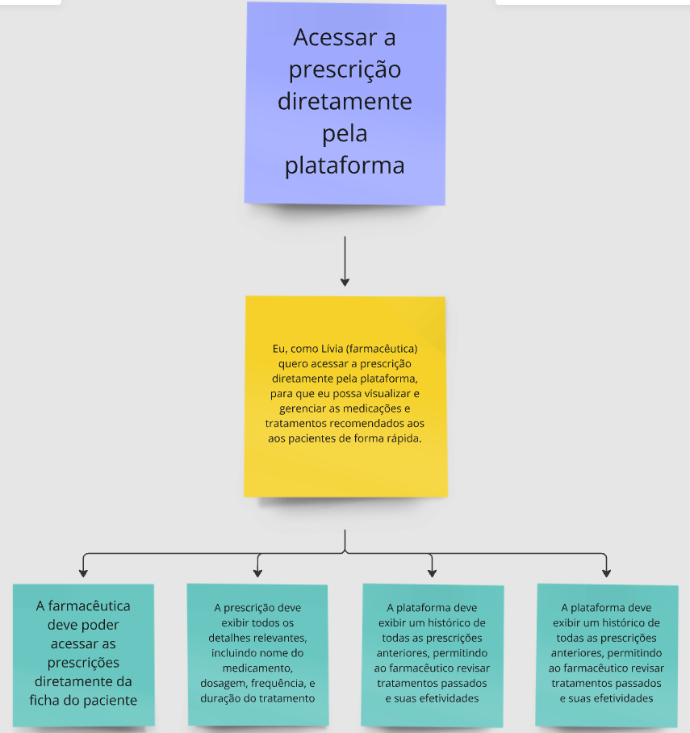
Critérios de aceitação do épico
US4: Eu, como João (médico) eu quero preencher e assinar digitalmente uma receita médica no sistema, para que a prescrição seja válida e possa ser facilmente compartilhada com o paciente e farmácias
- O sistema deve permitir que o médico preencha todos os campos necessários da receita médica, incluindo dados do paciente, medicamentos prescritos, dosagens, e instruções de uso;
- O médico deve poder assinar digitalmente a receita, utilizando um certificado digital ou outro método seguro, garantindo a autenticidade e validade legal da prescrição;
- O sistema deve notificar o médico caso haja qualquer problema ou erro ao tentar assinar digitalmente a receita, com instruções para resolução.
US5: Eu, como João (médico) eu quero enviar a prescrição diretamente para uma farmácia parceira pelo sistema, para que o paciente possa receber os medicamentos de forma mais rápida
- O sistema deve registrar e exibir no histórico da farmacêutica todas as prescrições enviadas, incluindo a data, hora e farmácia de destino;
- Após o envio da prescrição, o sistema deve fornecer uma confirmação de que a farmácia parceira recebeu a prescrição.
US6: Eu, como Lívia (farmacêutica) quero acessar a prescrição diretamente pela plataforma, para que eu possa visualizar e gerenciar as medicações e tratamentos recomendados aos aos pacientes de forma rápida.
- A farmacêutica deve poder acessar as prescrições diretamente da ficha do paciente;
- A prescrição deve exibir todos os detalhes relevantes, incluindo nome do medicamento, dosagem, frequência, e duração do tratamento;
- A plataforma deve exibir um histórico de todas as prescrições anteriores, permitindo ao farmacêutico revisar tratamentos passados e suas efetividades;
- A plataforma deve exibir um histórico de todas as prescrições anteriores, permitindo ao farmacêutico revisar tratamentos passados e suas efetividades.
Épico: Gestão de Agendamentos para Pacientes
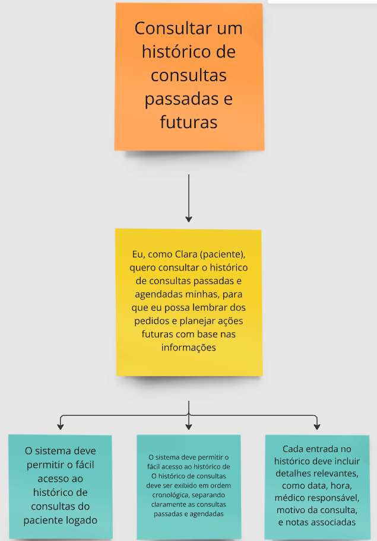
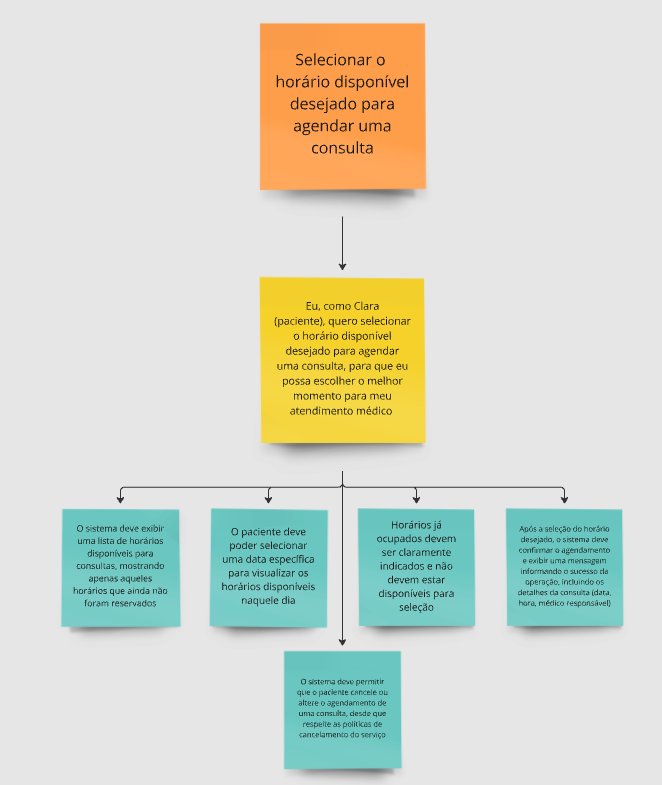
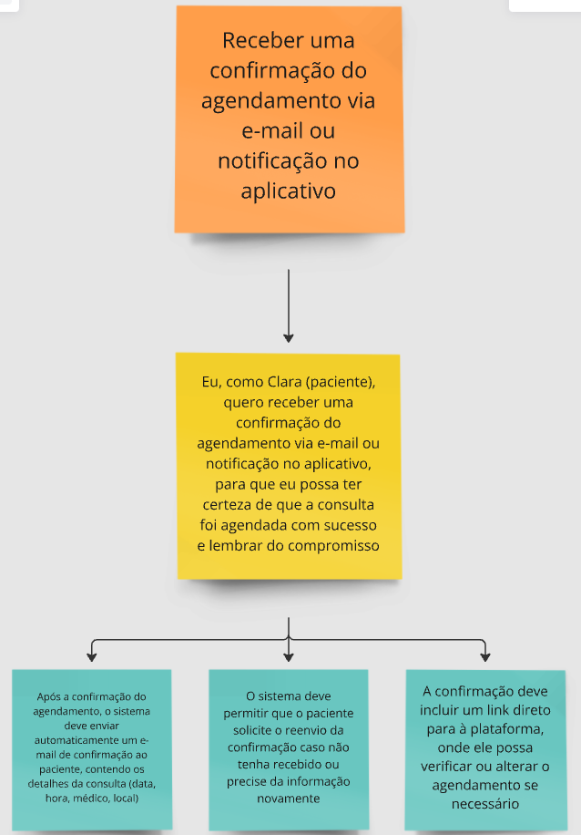
Critérios de aceitação do épico
US7: Eu, como Clara (paciente), quero consultar o histórico de consultas passadas e agendadas minhas, para que eu possa lembrar dos pedidos e planejar ações futuras com base nas informações
- O sistema deve permitir o fácil acesso ao histórico de consultas do paciente logado;
- O sistema deve permitir o fácil acesso ao histórico de O histórico de consultas deve ser exibido em ordem cronológica, separando claramente as consultas passadas e agendadas;
- Cada entrada no histórico deve incluir detalhes relevantes, como data, hora, médico responsável, motivo da consulta, e notas associadas.
US8: Eu, como Clara (paciente), quero selecionar o horário disponível desejado para agendar uma consulta, para que eu possa escolher o melhor momento para meu atendimento médico
- O sistema deve exibir uma lista de horários disponíveis para consultas, mostrando apenas aqueles horários que ainda não foram reservados;
- O paciente deve poder selecionar uma data específica para visualizar os horários disponíveis naquele dia;
- Horários já ocupados devem ser claramente indicados e não devem estar disponíveis para seleção;
- Após a seleção do horário desejado, o sistema deve confirmar o agendamento e exibir uma mensagem informando o sucesso da operação, incluindo os detalhes da consulta (data, hora, médico responsável);
- O sistema deve permitir que o paciente cancele ou altere o agendamento de uma consulta, desde que respeite as políticas de cancelamento do serviço.
US9: Eu, como Clara (paciente), quero receber uma confirmação do agendamento via e-mail ou notificação no aplicativo, para que eu possa ter certeza de que a consulta foi agendada com sucesso e lembrar do compromisso
- Após a confirmação do agendamento, o sistema deve enviar automaticamente um e-mail de confirmação ao paciente, contendo os detalhes da consulta (data, hora, médico, local);
- O sistema deve permitir que o paciente solicite o reenvio da confirmação caso não tenha recebido ou precise da informação novamente;
- A confirmação deve incluir um link direto para à plataforma, onde ele possa verificar ou alterar o agendamento se necessário.
Épico: Coordenação de Agendas Médicas
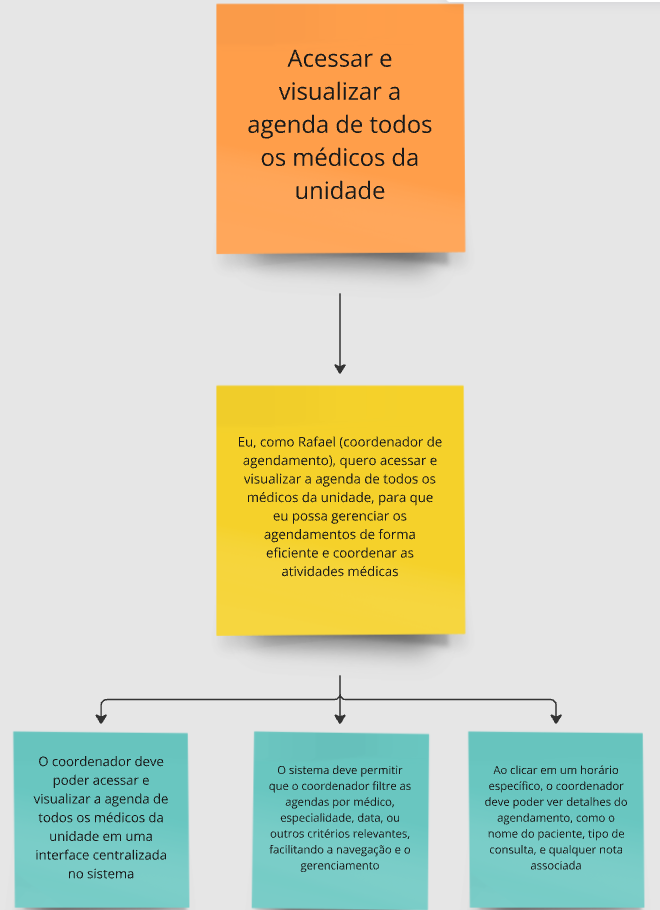
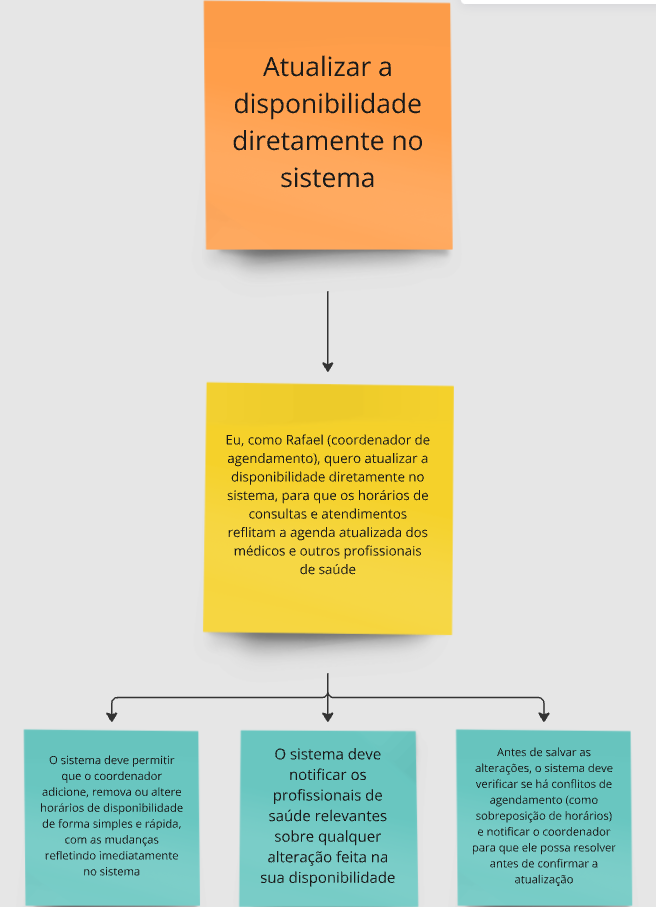
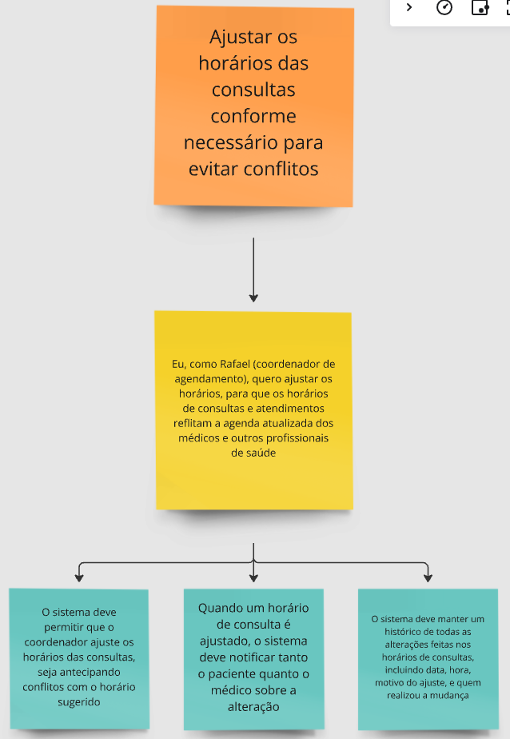
Critérios de aceitação do épico
US10: Eu, como Rafael (coordenador de agendamento), quero acessar e visualizar a agenda de todos os médicos da unidade, para que eu possa gerenciar os agendamentos de forma eficiente e coordenar as atividades médicas
- O coordenador deve poder acessar e visualizar a agenda de todos os médicos da unidade em uma interface centralizada no sistema;
- O sistema deve permitir que o coordenador filtre as agendas por médico, especialidade, data, ou outros critérios relevantes, facilitando a navegação e o gerenciamento;
- Ao clicar em um horário específico, o coordenador deve poder ver detalhes do agendamento, como o nome do paciente, tipo de consulta, e qualquer nota associada.
US11: Eu, como Rafael (coordenador de agendamento), quero atualizar a disponibilidade diretamente no sistema, para que os horários de consultas e atendimentos reflitam a agenda atualizada dos médicos e outros profissionais de saúde
- O sistema deve permitir que o coordenador adicione, remova ou altere horários de disponibilidade de forma simples e rápida, com as mudanças refletindo imediatamente no sistema;
- O sistema deve notificar os profissionais de saúde relevantes sobre qualquer alteração feita na sua disponibilidade;
- Antes de salvar as alterações, o sistema deve verificar se há conflitos de agendamento (como sobreposição de horários) e notificar o coordenador para que ele possa resolver antes de confirmar a atualização.
US12: Eu, como Rafael (coordenador de agendamento), quero ajustar os horários, para que os horários de consultas e atendimentos reflitam a agenda atualizada dos médicos e outros profissionais de saúde
- O sistema deve permitir que o coordenador ajuste os horários das consultas, seja antecipando conflitos com o horário sugerido;
- Quando um horário de consulta é ajustado, o sistema deve notificar tanto o paciente quanto o médico sobre a alteração;
- O sistema deve manter um histórico de todas as alterações feitas nos horários de consultas, incluindo data, hora, motivo do ajuste, e quem realizou a mudança.
Épico: Gestão de Prescrições para Farmacêuticos
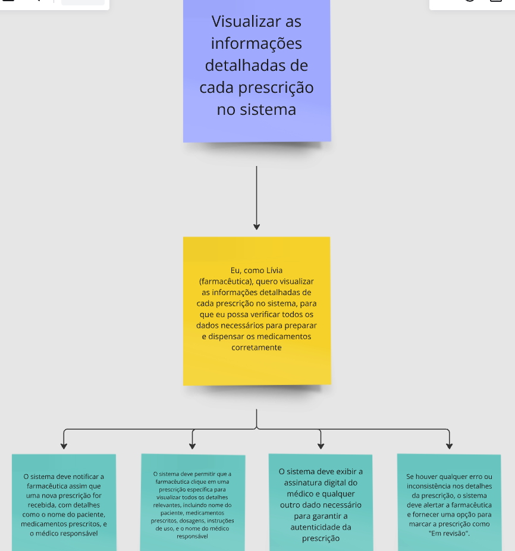
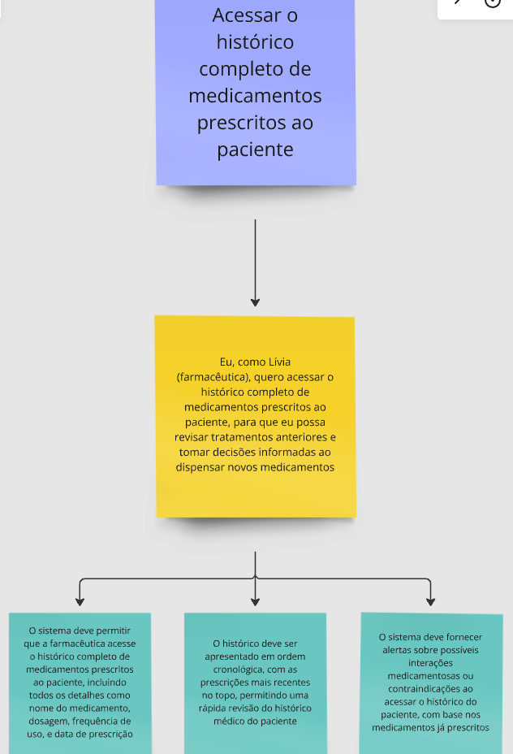
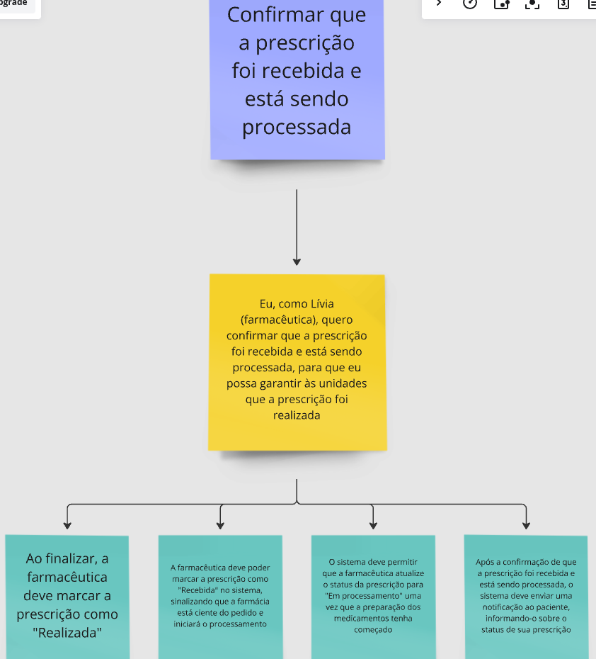
Critérios de aceitação do épico
US13: Eu, como Lívia (farmacêutica), quero visualizar as informações detalhadas de cada prescrição no sistema, para que eu possa verificar todos os dados necessários para preparar e dispensar os medicamentos corretamente
- O sistema deve notificar a farmacêutica assim que uma nova prescrição for recebida, com detalhes como o nome do paciente, medicamentos prescritos, e o médico responsável;
- O sistema deve permitir que a farmacêutica clique em uma prescrição específica para visualizar todos os detalhes relevantes, incluindo nome do paciente, medicamentos prescritos, dosagens, instruções de uso, e o nome do médico responsável;
- O sistema deve exibir a assinatura digital do médico e qualquer outro dado necessário para garantir a autenticidade da prescrição;
- Se houver qualquer erro ou inconsistência nos detalhes da prescrição, o sistema deve alertar a farmacêutica e fornecer uma opção para marcar a prescrição como "Em revisão".
US14: Eu, como Lívia (farmacêutica), quero acessar o histórico completo de medicamentos prescritos ao paciente, para que eu possa revisar tratamentos anteriores e tomar decisões informadas ao dispensar novos medicamentos
- O sistema deve permitir que a farmacêutica acesse o histórico completo de medicamentos prescritos ao paciente, incluindo todos os detalhes como nome do medicamento, dosagem, frequência de uso, e data de prescrição;
- O histórico deve ser apresentado em ordem cronológica, com as prescrições mais recentes no topo, permitindo uma rápida revisão do histórico médico do paciente;
- O sistema deve fornecer alertas sobre possíveis interações medicamentosas ou contraindicações ao acessar o histórico do paciente, com base nos medicamentos já prescritos.
US15: Eu, como Lívia (farmacêutica), quero confirmar que a prescrição foi recebida e está sendo processada, para que eu possa garantir às unidades que a prescrição foi realizada
- Ao finalizar, a farmacêutica deve marcar a prescrição como "Realizada";
- A farmacêutica deve poder marcar a prescrição como "Recebida" no sistema, sinalizando que a farmácia está ciente do pedido e iniciará o processamento;
- O sistema deve permitir que a farmacêutica atualize o status da prescrição para "Em processamento" uma vez que a preparação dos medicamentos tenha começado;
- Após a confirmação de que a prescrição foi recebida e está sendo processada, o sistema deve enviar uma notificação ao paciente, informando-o sobre o status de sua prescrição.
US16: Eu, como Clara (paciente), quero acessar detalhadamente os resultados das minhas consultas passadas, incluindo relatórios médicos e exames, para que eu possa acompanhar meu histórico de saúde e compartilhar informações quando necessário
- O sistema deve permitir que o paciente acesse todos os resultados de consultas passadas, incluindo relatórios médicos, exames, diagnósticos, prescrições, e notas dos médicos;
- Os resultados devem ser organizados cronologicamente, permitindo que o paciente navegue facilmente pelos diferentes registros de consultas passadas;
- O sistema deve oferecer ferramentas de pesquisa e filtros que permitam ao paciente localizar rapidamente resultados específicos, como por tipo de exame, médico, ou data da consulta.
US17: Eu, como Clara (paciente), quero compartilhar os resultados de minhas consultas diretamente com outros médicos pelo sistema, para que eles possam acessar meu histórico médico e fornecer um atendimento mais integrado e informado
- O paciente deve poder selecionar quais resultados de consultas (como exames, diagnósticos, receitas) deseja compartilhar com outros médicos diretamente pelo sistema;
- O sistema deve permitir que o paciente selecione os médicos com quem deseja compartilhar as informações, podendo buscar por nome, especialidade, ou localização;
- Assim que o paciente compartilhar os resultados, o médico selecionado deve ser notificado, com acesso imediato às informações compartilhadas.
Épico: Gerenciamento de Registros de Saúde do Paciente
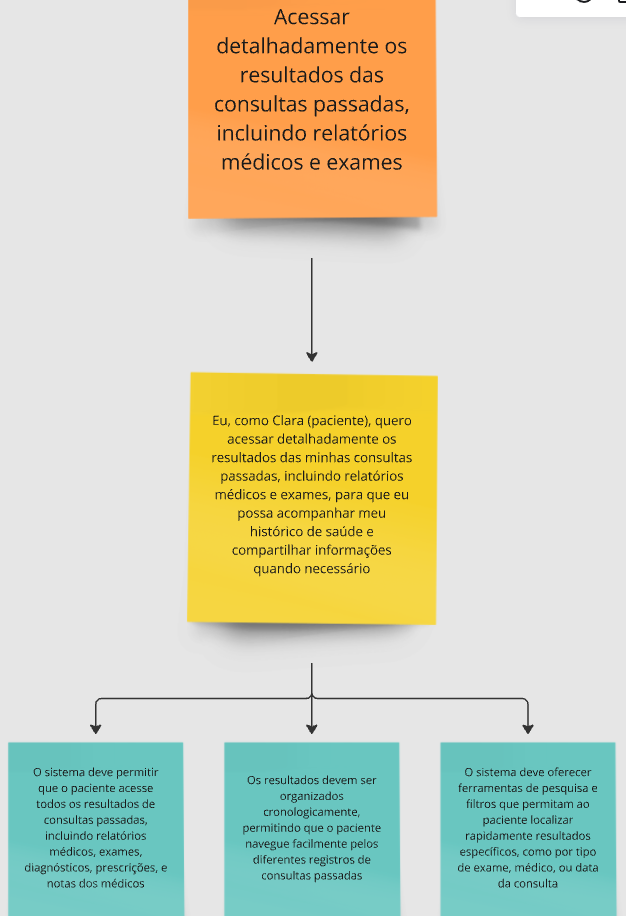
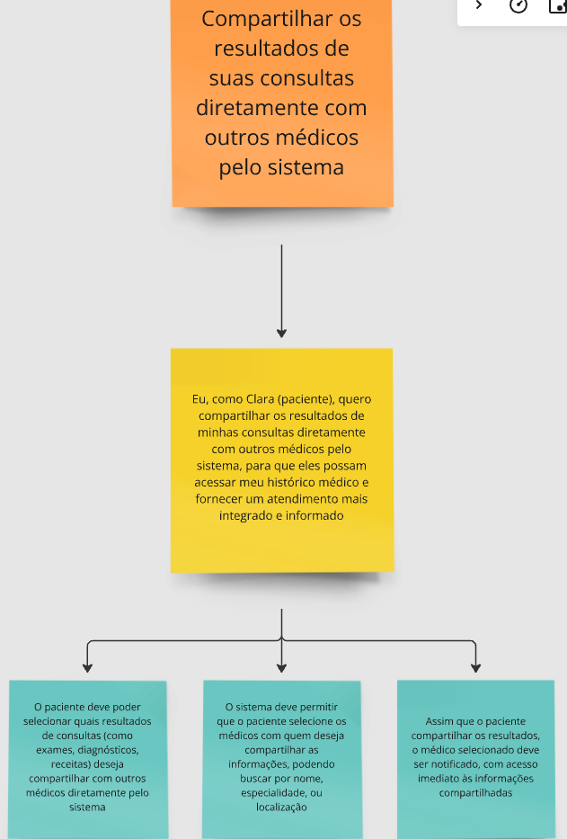
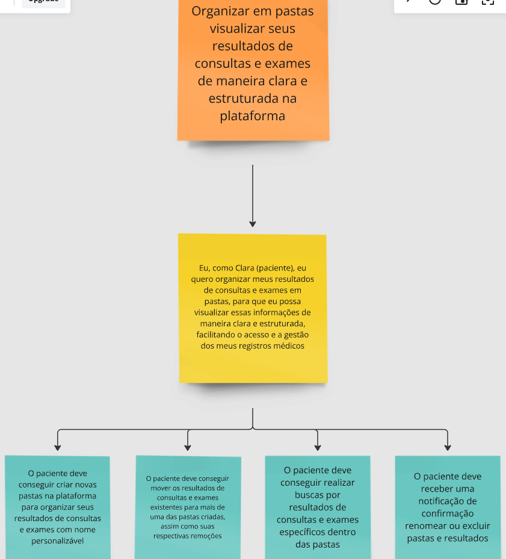
Critérios de aceitação do épico
US16: Eu, como Clara (paciente), quero acessar detalhadamente os resultados das minhas consultas passadas, incluindo relatórios médicos e exames, para que eu possa acompanhar meu histórico de saúde e compartilhar informações quando necessário
- O sistema deve permitir que o paciente acesse todos os resultados de consultas passadas, incluindo relatórios médicos, exames, diagnósticos, prescrições, e notas dos médicos;
- Os resultados devem ser organizados cronologicamente, permitindo que o paciente navegue facilmente pelos diferentes registros de consultas passadas;
- O sistema deve oferecer ferramentas de pesquisa e filtros que permitam ao paciente localizar rapidamente resultados específicos, como por tipo de exame, médico, ou data da consulta.
US17: Eu, como Clara (paciente), quero compartilhar os resultados de minhas consultas diretamente com outros médicos pelo sistema, para que eles possam acessar meu histórico médico e fornecer um atendimento mais integrado e informado
- O paciente deve poder selecionar quais resultados de consultas (como exames, diagnósticos, receitas) deseja compartilhar com outros médicos diretamente pelo sistema;
- O sistema deve permitir que o paciente selecione os médicos com quem deseja compartilhar as informações, podendo buscar por nome, especialidade, ou localização;
- Assim que o paciente compartilhar os resultados, o médico selecionado deve ser notificado, com acesso imediato às informações compartilhadas.
US18: Eu, como Clara (paciente), eu quero organizar meus resultados de consultas e exames em pastas, para que eu possa visualizar essas informações de maneira clara e estruturada, facilitando o acesso e a gestão dos meus registros médicos
- O paciente deve conseguir criar novas pastas na plataforma para organizar seus resultados de consultas e exames com nome personalizável;
- O paciente deve conseguir mover os resultados de consultas e exames existentes para mais de uma das pastas criadas, assim como suas respectivas remoções;
- O paciente deve conseguir realizar buscas por resultados de consultas e exames específicos dentro das pastas;
- O paciente deve receber uma notificação de confirmação renomear ou excluir pastas e resultados.
Épico: Gestão de Relatórios e Conformidade
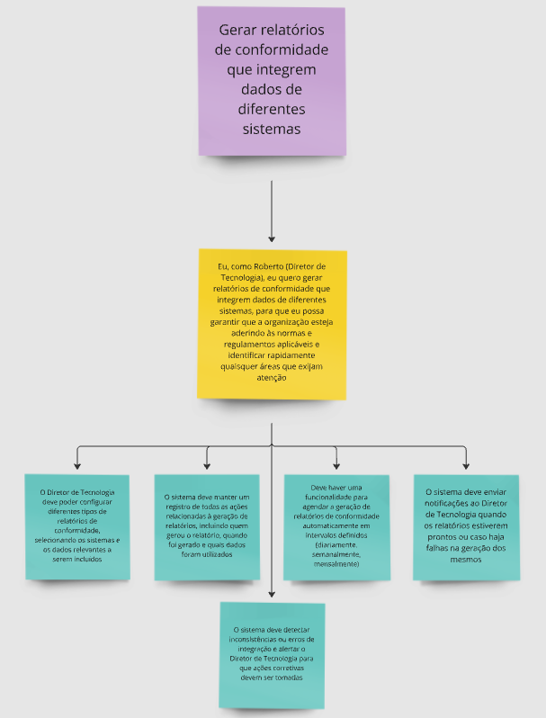
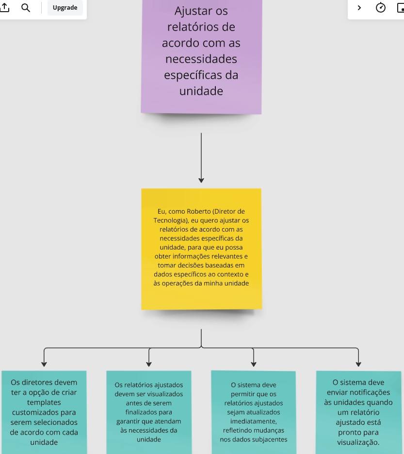
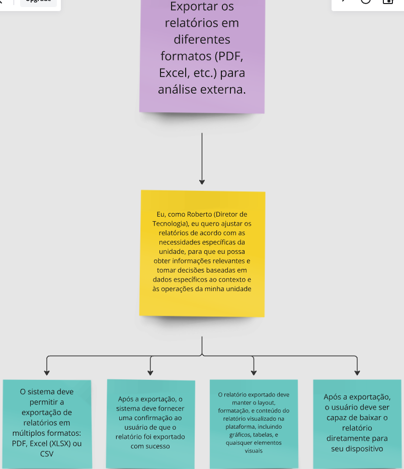
Critérios de aceitação do épico
US19: Eu, como Roberto (Diretor de Tecnologia), eu quero gerar relatórios de conformidade que integrem dados de diferentes sistemas, para que eu possa garantir que a organização esteja aderindo às normas e regulamentos aplicáveis e identificar rapidamente quaisquer áreas que exijam atenção
- O Diretor de Tecnologia deve poder configurar diferentes tipos de relatórios de conformidade, selecionando os sistemas e os dados relevantes a serem incluídos;
- O sistema deve manter um registro de todas as ações relacionadas à geração de relatórios, incluindo quem gerou o relatório, quando foi gerado e quais dados foram utilizados;
- Deve haver uma funcionalidade para agendar a geração de relatórios de conformidade automaticamente em intervalos definidos (diariamente, semanalmente, mensalmente);
- O sistema deve enviar notificações ao Diretor de Tecnologia quando os relatórios estiverem prontos ou caso haja falhas na geração dos mesmos;
- O sistema deve detectar inconsistências ou erros de integração e alertar o Diretor de Tecnologia para que ações corretivas devem ser tomadas.
US20: Eu, como Roberto (Diretor de Tecnologia), eu quero ajustar os relatórios de acordo com as necessidades específicas da unidade, para que eu possa obter informações relevantes e tomar decisões baseadas em dados específicos ao contexto e às operações da minha unidade
- Os diretores devem ter a opção de criar templates customizados para serem selecionados de acordo com cada unidade;
- Os relatórios ajustados devem ser visualizados antes de serem finalizados para garantir que atendam às necessidades da unidade;
- O sistema deve permitir que os relatórios ajustados sejam atualizados imediatamente, refletindo mudanças nos dados subjacentes;
- O sistema deve enviar notificações às unidades quando um relatório ajustado está pronto para visualização.
US21: Eu, como Roberto (Diretor de Tecnologia), eu quero ajustar os relatórios de acordo com as necessidades específicas da unidade, para que eu possa obter informações relevantes e tomar decisões baseadas em dados específicos ao contexto e às operações da minha unidade
- O sistema deve permitir a exportação de relatórios em múltiplos formatos: PDF, Excel (XLSX) ou CSV;
- Após a exportação, o sistema deve fornecer uma confirmação ao usuário de que o relatório foi exportado com sucesso;
- O relatório exportado deve manter o layout, formatação, e conteúdo do relatório visualizado na plataforma, incluindo gráficos, tabelas, e quaisquer elementos visuais;
- Após a exportação, o usuário deve ser capaz de baixar o relatório diretamente para seu dispositivo.
Behavior Driven Development (BDD)
O Behavior Driven Development (BDD) é uma técnica que transforma os critérios de aceitação de uma história em especificações executáveis. Essa prática utiliza uma linguagem simples e natural, permitindo que todos os envolvidos no projeto compreendam facilmente os requisitos. O BDD segue uma abordagem baseada em especificações e ajuda a validar se um sistema atende aos critérios estabelecidos para cada funcionalidade.
Ao utilizar cenários de BDD, os critérios de aceitação tradicionais podem ser substituídos por esses cenários detalhados, permitindo uma verificação mais prática e clara do comportamento esperado do sistema. A criação de um backlog colaborativo e eficiente envolve todos os membros da equipe que trabalham no produto. A metodologia de Product Backlog Building (PBB) facilita esse processo ao esclarecer as histórias de usuário e o backlog dos times. O PBB Canvas é uma ferramenta visual usada para auxiliar nesse trabalho colaborativo.
Na atividade proposta pela professora Cristiane, a ideia é aplicar a técnica do PBB para criar e refinar o backlog de forma colaborativa e, a partir do backlog criado, desenvolveríamos os cenários de BDD, transformando as histórias de usuário e critérios de aceitação em cenários que possam ser testados e validados.
Cenários - Recepcionista
| História | Critérios de aceitação | Cenários |
|---|---|---|
| Eu, como Maria (recepcionista), quero inserir as informações de um novo paciente, para que eu possa manter os registros de pacientes atualizados e acessíveis | Critério 1: A inserção de novo paciente deve incluir campos obrigatórios de nome, data de nascimento, CPF, endereço, e telefone de contato Critério 2: Após a inserção das informações do paciente, o sistema deve exibir uma mensagem de confirmação informando que o paciente foi adicionado com sucesso Critério 3: Caso haja algum erro na inserção dos dados, o sistema deve informar ao usuário o motivo do erro e sugerir a correção necessária a partir de uma mensagem Critério 4: As informações do novo paciente devem estar imediatamente disponíveis no sistema para consulta e atualização |
Cenário 1: Dado que a Maria está na tela de cadastro de pacientes e possui as informações de um novo paciente Quando ela inserir os seguintes campos: - Nome: Larissa Pereira da Silva - Data de nascimento: 12/04/2002 - CPF: 847.473.294-29 - Telefone de contato: (34) 92734-8741 (Cadastro correto) Então a Maria deve ser informada que o cadastro foi efetivado Cenário 2: Dado que a Maria está na tela de cadastro de pacientes e possui as informações de um novo paciente Quando ela inserir os seguintes campos: - Nome: Larissa Pereira da Silva - Data de nascimento: 10/02/2000 - CPF: 014.675.246-12 - Telefone de contato: (61) 98737-2897 (Cadastro incorreto) Então a Maria deve ser informada que um dos campos está inválido |
| Eu, como Maria (recepcionista), quero atualizar os dados de um paciente conforme necessário, para garantir que as informações armazenadas sejam precisas e atualizadas | Critério 1: O sistema deve permitir acessar e visualizar os dados existentes de um paciente específico para realizar atualizações Critério 2: Todos os campos devem ser editáveis para permitir as atualizações necessárias Critério 3: Após a atualização dos dados do paciente, o sistema deve exibir uma mensagem de confirmação informando que os dados foram atualizados com sucesso Critério 4: Caso haja algum erro durante a atualização dos dados, o sistema deve informar ao usuário o motivo do erro Critério 5: O sistema deve manter um histórico das alterações realizadas nos dados do paciente, incluindo data e hora da modificação e o usuário responsável pela alteração Critério 6: As informações atualizadas devem estar imediatamente disponíveis e consistentes em todas as partes do sistema onde os dados do paciente são exibidos |
Cenário 1: Dado que a Maria está na tela de gerenciamento de pacientes e há um paciente com dados desatualizados no sistema Quando ela seleciona o paciente a atualizar os dados e faz as alterações nos campos: - Nome: Raissa Pereira da Silva - Data de nascimento: 07/04/1989 - CPF: 759.957.726-38 - Telefone de contato: (61) 94738-2847 Então a Maria deve ser informada que a atualização foi efetivado Cenário 2: Dado que que a Maria está na tela de gerenciamento de pacientes e há um paciente com dados desatualizados no sistema Quando ela seleciona o paciente a atualizar os dados e faz as alterações nos campos: - Nome: Raissa Pereira da Silva - Data de nascimento: 07/12/1989 - CPF: 478.234.324-12 - Telefone de contato: (61) 92372-1287 Então Maria deve ser informada que um dos campos está inválido |
| Eu, como Maria (recepcionista) quero buscar rapidamente o registro de um paciente existente no sistema, para que eu possa acessar as informações necessárias de forma eficiente e sem demora | Critério 1: O sistema deve oferecer uma barra de pesquisa visível e acessível na interface principal, permitindo a busca por nome, CPF ou outro identificador único do paciente Critério 2: O sistema deve permitir o uso de filtros para refinar a busca, para filtrar por data de nascimento Critério 3: Os resultados da busca devem ser exibidos instantaneamente à medida que o usuário digita, filtrando automaticamente pacientes que correspondem aos critérios de pesquisa Critério 4: Caso a busca não encontre registros correspondentes, o sistema deve informar claramente que nenhum paciente foi encontrado com os critérios fornecidos |
Cenário 1: Dado que a Maria está na tela de busca de pacientes e precisa acessar as informações de um paciente existente no sistema Quando ela pesquisar pelo: - Nome: Alessandra de Moura Ou pelo CPF: - CPF: 123.235.234-29 Então Maria deve visualizar uma única ou uma lista de pacientes que correspondam com o dado inserido Cenário 2: Dado que a Maria está na tela de busca de pacientes e precisa acessar as informações de um paciente existente no sistema Quando ela pesquisar pelo: - Nome: Heloísa de Fátima Ou pelo CPF: - CPF: 999.999.999-99 Então Maria não deve visualizar nenhum usuário a partir do dado inserido pelo fato de não houver Cenário 3: Dado que a Maria está na tela de busca de pacientes e precisa acessar as informações de um paciente existente no sistema Quando ela filtrar pelo ano de nascimento: - Ano: 2003 Então: Maria deve visualizar uma lista de pacientes que nasceram no ano em 2003 Cenário 4: Dado que a Maria está na tela de busca de pacientes e precisa acessar as informações de um paciente existente no sistema Quando ela filtrar pelo ano de nascimento: - Ano: 1500 Então: Maria não conseguirá visualizar ninguém que nasceu nesse ano pelo fato de não houver |
Cenários - Médico
| História | Critérios de aceitação | Cenários |
|---|---|---|
| Eu, como João (médico) eu quero preencher e assinar digitalmente uma receita médica no sistema, para que a prescrição seja válida e possa ser facilmente compartilhada com o paciente e farmácias | Critério 1: O sistema deve permitir que o médico preencha todos os campos necessários da receita médica, incluindo dados do paciente, medicamentos prescritos, dosagens, e instruções de uso Critério 2: O médico deve poder assinar digitalmente a receita, utilizando um certificado digital ou outro método seguro, garantindo a autenticidade e validade legal da prescrição Critério 3: O sistema deve notificar o médico caso haja qualquer problema ou erro ao tentar assinar digitalmente a receita, com instruções para resolução |
Cenário 1: Dado que João está na tela de prescrição do sistema e já realizou a consulta com o paciente Quando ele preenche os campos da receita médica com o nome do medicamento, dosagem, instruções de uso e outras informações pertinentes ele assina digitalmente a receita clicando no botão "Assinar" Então a receita médica é validada pelo sistema, com a assinatura digital confirmada e a receita fica disponível para ser enviada digitalmente ao paciente e farmácias Cenário 2: Dado que João está na tela de prescrição do sistema e já realizou a consulta com o paciente Quando ele preenche os campos da receita médica com o nome do medicamento, dosagem, instruções de uso e outras informações pertinentes ele assina digitalmente a receita clicando no botão "Assinar" Então a receita médica é invalidada pelo sistema, informando campos inválidos e portanto a receita fica indisponível para ser enviada digitalmente ao paciente e farmácias até a validação novamente |
| Eu, como João (médico) eu quero enviar a prescrição diretamente para uma farmácia parceira pelo sistema, para que o paciente possa receber os medicamentos de forma mais rápida | Critério 1: O sistema deve registrar e exibir no histórico da farmacêutica todas as prescrições enviadas, incluindo a data, hora e farmácia de destino Critério 2: Após o envio da prescrição, o sistema deve fornecer uma confirmação de que a farmácia parceira recebeu a prescrição |
Cenário 1: Dado que João já preencheu e assinou digitalmente a receita médica Quando ele seleciona uma farmácia parceira no sistema e clica no botão "Enviar Prescrição" Então o sistema envia a receita médica para a farmácia selecionada de forma digital com os dados: - Data de envio: 10/12/2024 - Hora: 13:06 - Famácias destinadas: Drogasil, Drogaria E depois uma confirmação é exibida, indicando que a prescrição foi enviada com sucesso para a farmácia |
Cenários - Farmacêutica
| História | Critérios de aceitação | Cenários |
|---|---|---|
| Eu, como Lívia (farmacêutica), quero visualizar as informações detalhadas de cada prescrição no sistema, para que eu possa verificar todos os dados necessários para preparar e dispensar os medicamentos corretamente | Critério 1: O sistema deve notificar a farmacêutica assim que uma nova prescrição for recebida, com detalhes como o nome do paciente, medicamentos prescritos, e o médico responsável Critério 2: O sistema deve permitir que a farmacêutica clique em uma prescrição específica para visualizar todos os detalhes relevantes, incluindo nome do paciente, medicamentos prescritos, dosagens, instruções de uso, e o nome do médico responsável Critério 3: O sistema deve exibir a assinatura digital do médico e qualquer outro dado necessário para garantir a autenticidade da prescrição Critério 4: Se houver qualquer erro ou inconsistência nos detalhes da prescrição, o sistema deve alertar a farmacêutica e fornecer uma opção para marcar a prescrição como "Em revisão" |
Cenário 1: Dado que a Lívia está na tela de prescrições e recebeu uma nova prescrição disponível para visualização Quando ela seleciona a prescrição de um paciente e clica em "Visualizar Detalhes" Então o sistema exibe todas as informações detalhadas da prescrição realizado pelo médico, incluindo: - Nome dos medicamentos; - Dosagem; - Instruções de uso; - Data de emissão; - Assinatura digital do médico E Lívia consegue verificar todos os dados necessários para preparar e dispensar os medicamentos corretamente. Cenário 2: Dado que a Lívia está na tela de prescrições e recebeu uma nova prescrição disponível para visualização Quando ela seleciona a prescrição de um paciente e clica em "Visualizar Detalhes" Então o sistema exibe todas as informações detalhadas da prescrição realizado pelo médico, incluindo: - Nome dos medicamentos; - Dosagem; - Instruções de uso; - Data de emissão; - Assinatura digital do médico E Lívia clica no botão "Em revisão" visto que existem erros em algumas das informações inseridas e será necessario reajustar |
| Eu, como Lívia (farmacêutica), quero acessar o histórico completo de medicamentos prescritos ao paciente, para que eu possa revisar tratamentos anteriores e tomar decisões informadas ao dispensar novos medicamentos | Critério 1: O sistema deve permitir que a farmacêutica acesse o histórico completo de medicamentos prescritos ao paciente, incluindo todos os detalhes como nome do medicamento, dosagem, frequência de uso, e data de prescrição Critério 2: O histórico deve ser apresentado em ordem cronológica, com as prescrições mais recentes no topo, permitindo uma rápida revisão do histórico médico do paciente Critério 3: O sistema deve fornecer alertas sobre possíveis interações medicamentosas ou contraindicações ao acessar o histórico do paciente, com base nos medicamentos já prescritos |
Cenário 1: Dado que a Lívia está na tela de perfil do paciente e precisa revisar o histórico de medicamentos prescritos Quando ela clica na aba de "Histórico de Prescrições" ou "Histórico de Medicamentos" no sistema Então o sistema exibe o histórico completo de medicamentos que foram prescritos ao paciente, incluindo: - Datas; - Nomes dos medicamentos; - Dosagens - Médico responsável por cada prescrição. E assim, Lívia pode usar essas informações para tomar decisões informadas ao dispensar os novos medicamentos Cenário 2: Dado que o paciente não possui prescrições anteriores no sistema Quando a Lívia acessa o histórico de medicamentos Então O sitema exibe uma mensagem informando que não há histórico de medicamentos disponíveis para esse paciente |
| Eu, como Lívia (farmacêutica), quero confirmar que a prescrição foi recebida e está sendo processada, para que eu possa garantir às unidades que a prescrição foi realizada | Critério 1: Ao finalizar, a farmacêutica deve marcar a prescrição como "Realizada" Critério 2: A farmacêutica deve poder marcar a prescrição como "Recebida" no sistema, sinalizando que a farmácia está ciente do pedido e iniciará o processamento Critério 3: O sistema deve permitir que a farmacêutica atualize o status da prescrição para "Em processamento" uma vez que a preparação dos medicamentos tenha começado Critério 4: Após a confirmação de que a prescrição foi recebida e está sendo processada, o sistema deve enviar uma notificação ao paciente, informando-o sobre o status de sua prescrição |
Cenário 1: Dado que prescrição foi enviada pelo médico e está registrada no sistema Quando a Lívia acessa o sistema para verificar o status da prescrição Então o sistema deve mostrar que a prescrição foi recebida e está sendo processada para a Lívia Cenário 2: Dado que a prescrição foi enviada pelo médico, mas não está registrada no sistema Quando a Lívia tenta verificar o status da prescrição Então o sistema deve informar que a prescrição não foi encontrada e sugerir que o envio seja verificado para a Lívia Cenário 3: Dado que a prescrição foi recebida e processada, mas ocorreu um erro durante o processamento Quando a Lívia acessa o sistema para verificar o status da prescrição Então o sistema deve mostrar que a prescrição está em processamento e informar o erro ocorrido para que ações corretivas possam ser tomadas para a Lívia Cenário 4: Dado a prescrição foi processada com sucesso Quando a Lívia acessa o sistema para verificar o status da prescrição Então o sistema deve mostrar que a prescrição já foi processada com sucesso para a Lívia intermediar |
Cenários - Coordenador de Agendamento
| História | Critérios de aceitação | Cenários |
|---|---|---|
| Eu, como Rafael (coordenador de agendamento), quero acessar e visualizar a agenda de todos os médicos da unidade, para que eu possa gerenciar os agendamentos de forma eficiente e coordenar as atividades médicas | Critério 1: O coordenador deve poder acessar e visualizar a agenda de todos os médicos da unidade em uma interface centralizada no sistema Critério 2: O sistema deve permitir que o coordenador filtre as agendas por médico, especialidade, data, ou outros critérios relevantes, facilitando a navegação e o gerenciamento Critério 3: Ao clicar em um horário específico, o coordenador deve poder ver detalhes do agendamento, como o nome do paciente, tipo de consulta, e qualquer nota associada |
Cenário 1: Dado que Rafael está autenticado no sistema e tem as permissões adequadas Quando Rafael acessa a seção de gerenciamento de agendas Então o sistema deve mostrar a agenda completa de todos os médicos da unidade, incluindo horários disponíveis e compromissos já agendados para o Rafael Cenário 2: Dado que Rafael está autenticado no sistema e tem as permissões adequadas Quando Rafael seleciona um médico específico, ou uma data, ou por uma especialidade para visualizar em sua agenda Então o sistema deve mostrar a agenda desse médico com detalhes sobre seus horários disponíveis e compromissos agendados para o Rafael Cenário 3: Dado que Rafael está autenticado no sistema e tem as permissões adequadas Quando Rhá uma falha no sistema ao tentar carregar a agenda de todos os médicos Então o sistema deve exibir uma mensagem de erro informando sobre a falha e sugerir que Rafael tente novamente mais tarde ou entre em contato com o suporte técnico da aplicação |
| Eu, como Rafael (coordenador de agendamento), quero atualizar a disponibilidade diretamente no sistema, para que os horários de consultas e atendimentos reflitam a agenda atualizada dos médicos e outros profissionais de saúde | Critério 1: O sistema deve permitir que o coordenador adicione, remova ou altere horários de disponibilidade de forma simples e rápida, com as mudanças refletindo imediatamente no sistema Critério 2: O sistema deve notificar os profissionais de saúde relevantes sobre qualquer alteração feita na sua disponibilidade Crirério 3: Antes de salvar as alterações, o sistema deve verificar se há conflitos de agendamento (como sobreposição de horários) e notificar o coordenador para que ele possa resolver antes de confirmar a atualização |
Cenário 1: Dado que Rafael está autenticado no sistema e tem as permissões adequadas para atualizar a disponibilidade Quando Rafael altera a disponibilidade de um médico ou profissional de saúde (adiciona ou remove horários disponíveis) Então o sistema deve atualizar a agenda imediatamente para refletir as novas informações e notificar os profissionais envolvidos sobre a mudança Cenário 2: Dado que Rafael está autenticado no sistema e tem as permissões adequadas para atualizar a disponibilidade Quando Rafael tenta atualizar a disponibilidade de um médico ou profissional de saúde para um horário que já está ocupado por outro compromisso Então o sistema deve exibir uma mensagem de erro informando sobre o conflito e solicitar que Rafael ajuste a disponibilidade para um horário diferente Cenário 3: Dado que Rafael está autenticado no sistema e tem as permissões adequadas para atualizar a disponibilidade Quando ocorre uma falha ao tentar salvar as alterações na disponibilidade (por exemplo, devido a um problema de conexão ou erro no sistema) Então o sistema deve exibir uma mensagem de erro informando sobre a falha e sugerir que Rafael tente novamente mais tarde ou entre em contato com o suporte técnico da aplicação Cenário 4: Dado que Rafael está autenticado no sistema e tem as permissões adequadas para atualizar a disponibilidade Quando ocorre uma falha ao tentar salvar as alterações na disponibilidade (por exemplo, devido a um problema de conexão ou erro no sistema) Então o sistema deve exibir uma mensagem de erro informando sobre a falha e sugerir que Rafael tente novamente mais tarde ou entre em contato com o suporte técnico da aplicação Rafael atualizou a disponibilidade de um médico ou profissional de saúde Cenário 5: Dado que Rafael iniciou a atualização da disponibilidade de um médico ou profissional de saúde Quando Rafael decide cancelar a operação antes de salvar as alterações Então o sistema deve descartar as alterações não salvas e manter a disponibilidade original sem modificações para o Rafael |
Cenários - Paciente
| História | Critérios de aceitação | Cenários |
|---|---|---|
| Eu, como Clara (paciente), quero consultar o histórico de consultas passadas e agendadas minhas, para que eu possa lembrar dos pedidos e planejar ações futuras com base nas informações | Critério 1: O sistema deve permitir o fácil acesso ao histórico de consultas do paciente logado Critério 2: O sistema deve permitir o fácil acesso ao histórico de O histórico de consultas deve ser exibido em ordem cronológica, separando claramente as consultas passadas e agendadas Critério 3: Cada entrada no histórico deve incluir detalhes relevantes, como data, hora, médico responsável, motivo da consulta, e notas associadas |
Cenário 1: Dado que Clara está autenticada no sistema como paciente Quando Clara acessa a seção de histórico de consultas Então o sistema deve exibir uma lista detalhada de todas as consultas passadas, incluindo datas, horários, médicos envolvidos, e detalhes dos atendimentos Cenário 2: Dado que Clara está autenticada no sistema como paciente Quando Clara acessa a seção de consultas agendadas Então o sistema deve exibir uma lista de todas as consultas futuras agendadas, incluindo datas, horários, médicos e locais das consultas Cenário 3: Dado que Clara está autenticada no sistema como paciente Quando Clara utiliza filtros ou busca por uma consulta específica no histórico a partir de: - Data; - Médico; - Tipo de consulta Então o sistema deve mostrar os resultados correspondentes à pesquisa ou filtro aplicado Cenário 4: Dado que Clara está autenticada no sistema como paciente Quando ocorre uma falha ao tentar carregar o histórico de consultas ou consultas agendadas (por exemplo, devido a problemas técnicos) - Data; - Médico; - Tipo de consulta Então o sistema deve exibir uma mensagem de erro informando sobre a falha e sugerir que Clara tente novamente mais tarde ou entre em contato com o suporte técnico da aplicação |
| Eu, como Clara (paciente), quero selecionar o horário disponível desejado para agendar uma consulta, para que eu possa escolher o melhor momento para meu atendimento médico | Critério 1: O sistema deve exibir uma lista de horários disponíveis para consultas, mostrando apenas aqueles horários que ainda não foram reservados Critério 2: O paciente deve poder selecionar uma data específica para visualizar os horários disponíveis naquele dia Critério 3: Horários já ocupados devem ser claramente indicados e não devem estar disponíveis para seleção Criério 4: Após a seleção do horário desejado, o sistema deve confirmar o agendamento e exibir uma mensagem informando o sucesso da operação, incluindo os detalhes da consulta (data, hora, médico responsável) Critério 5: O sistema deve permitir que o paciente cancele ou altere o agendamento de uma consulta, desde que respeite as políticas de cancelamento do serviço |
Cenário 1: Dado que Clara está autenticada no sistema como paciente Quando Clara acessa a seção para agendar uma consulta e visualiza os horários disponíveis Então o sistema deve exibir uma lista de horários disponíveis para a consulta, com base na disponibilidade dos médicos e na data selecionada Cenário 2: Dado que Clara está autenticada no sistema como paciente e visualizou os horários disponíveis Quando Clara seleciona um horário disponível desejado para agendar uma consulta Então o sistema deve confirmar a seleção e oferecer a opção de finalizar o agendamento, incluindo a confirmação do horário e a seleção do médico, se aplicável Cenário 3: Dado que Clara está autenticada no sistema como paciente e tenta selecionar um horário disponível Quando Clara seleciona um horário que, por algum motivo, já não está mais disponível no momento da seleção Então o sistema deve informar Clara que o horário não está mais disponível e exibir uma lista atualizada de horários disponíveis Cenário 4: Dado que Clara está autenticada no sistema como paciente e selecionou um horário disponível Quando Clara decide cancelar a seleção antes de finalizar o agendamento Então o sistema deve permitir que Clara deseje uma nova seleção de horário ou volte à lista de horários disponíveis sem alterar a disponibilidade já registrada |
| Eu, como Clara (paciente), quero receber uma confirmação do agendamento via e-mail ou notificação no aplicativo, para que eu possa ter certeza de que a consulta foi agendada com sucesso e lembrar do compromisso | Critério 1: Após a confirmação do agendamento, o sistema deve enviar automaticamente um e-mail de confirmação ao paciente, contendo os detalhes da consulta (data, hora, médico, local) Critério 2: O sistema deve permitir que o paciente solicite o reenvio da confirmação caso não tenha recebido ou precise da informação novamente Critério 3: A confirmação deve incluir um link direto para à plataforma, onde ele possa verificar ou alterar o agendamento se necessário |
Cenário 1: Dado que Clara completou o agendamento de uma consulta Quando o sistema processa o agendamento Então o sistema deve enviar um e-mail de confirmação para Clara com detalhes sobre a consulta agendada, incluindo data, horário, médico e local Cenário 2: Dado que Clara completou o agendamento de uma consulta e está usando o aplicativo Quando o sistema processa o agendamento Então o sistema deve enviar uma notificação dentro do aplicativo confirmando o agendamento da consulta, com os mesmos detalhes do e-mail Cenário 3: Dado que Clara recebeu a confirmação do agendamento via e-mail ou notificação no aplicativo Quando Clara visualiza a confirmação Então o e-mail ou a notificação deve incluir todos os detalhes relevantes da consulta, como data, horário, médico, local e qualquer instrução adicional necessária |
| Eu, como Clara (paciente), quero acessar detalhadamente os resultados das minhas consultas passadas, incluindo relatórios médicos e exames, para que eu possa acompanhar meu histórico de saúde e compartilhar informações quando necessário | Critério 1: O sistema deve permitir que o paciente acesse todos os resultados de consultas passadas, incluindo relatórios médicos, exames, diagnósticos, prescrições, e notas dos médicos Critério 2: Os resultados devem ser organizados cronologicamente, permitindo que o paciente navegue facilmente pelos diferentes registros de consultas passadas Critério 3: O sistema deve oferecer ferramentas de pesquisa e filtros que permitam ao paciente localizar rapidamente resultados específicos, como por tipo de exame, médico, ou data da consulta |
Cenário 1: Dado que Clara está autenticada no sistema como paciente Quando Clara acessa a seção de histórico de consultas Então o sistema deve exibir uma lista de todas as consultas passadas com a opção de visualizar os resultados detalhados de cada uma, incluindo relatórios médicos e exames Cenário 2: Dado que Clara está autenticada no sistema como paciente e selecionou uma consulta passada Quando Clara escolhe visualizar o relatório médico associado a essa consulta Então o sistema deve exibir o relatório médico detalhado, incluindo notas do médico, diagnósticos e recomendações prescritas pelo médico Cenário 3: Dado que Clara está autenticada no sistema como paciente e tenta acessar os resultados de uma consulta passada Quando ocorre uma falha ao carregar os resultados (por exemplo, devido a um problema técnico) Então o sistema deve exibir uma mensagem de erro informando sobre a falha e sugerir que Clara tente novamente mais tarde ou entre em contato com o suporte técnico da aplicação |
| Eu, como Clara (paciente), quero compartilhar os resultados de minhas consultas diretamente com outros médicos pelo sistema, para que eles possam acessar meu histórico médico e fornecer um atendimento mais integrado e informado | Critério 1: O paciente deve poder selecionar quais resultados de consultas (como exames, diagnósticos, receitas) deseja compartilhar com outros médicos diretamente pelo sistema Critério 2: O sistema deve permitir que o paciente selecione os médicos com quem deseja compartilhar as informações, podendo buscar por nome, especialidade, ou localização Critério 3: Assim que o paciente compartilhar os resultados, o médico selecionado deve ser notificado, com acesso imediato às informações compartilhadas |
Cenário 1: Dado que Clara está autenticada no sistema como paciente e acessa os resultados de suas consultas passadas Quando Clara escolhe compartilhar um ou mais resultados (relatórios médicos ou exames) com outro médico Então o sistema deve permitir que Clara selecione os resultados específicos que deseja compartilhar, com a opção de adicionar uma mensagem explicativa Cenário 2: Dado que Clara escolheu os resultados e o médico com quem deseja compartilhar Quando Clara confirma o compartilhamento Então o sistema deve enviar uma notificação ao médico selecionado, dando acesso aos resultados compartilhados, e exibir uma mensagem de confirmação para Clara, informando que o compartilhamento foi realizado com sucesso Cenário 3: Dado que Clara compartilhou resultados de uma consulta com outro médico Quando Clara decide revogar o acesso aos resultados Então o sistema deve permitir que Clara revogue o compartilhamento e notifique o médico que o acesso foi removido, garantindo que o médico não possa mais visualizar os resultados |
| Eu, como Clara (paciente), quero organizar meus resultados de consultas e exames em pastas, para que eu possa visualizar essas informações de maneira clara e estruturada, facilitando o acesso e a gestão dos meus registros médicos | Critério 1: O paciente deve conseguir criar novas pastas na plataforma para organizar seus resultados de consultas e exames com nome personalizável Critério 2: O paciente deve conseguir mover os resultados de consultas e exames existentes para mais de uma das pastas criadas, assim como suas respectivas remoções Critério 3: O paciente deve conseguir realizar buscas por resultados de consultas e exames específicos dentro das pastas Critério 4: O paciente deve receber uma notificação de confirmação renomear ou excluir pastas e resultados |
Cenário 1: Dado que Clara está autenticada no sistema como paciente e visualiza seus resultados de consultas e exames Quando Clara escolhe organizar seus resultados Então o sistema deve permitir que Clara crie pastas personalizadas para organizar os resultados de forma estruturada (por exemplo, por data, tipo de exame, ou médico) Cenário 2: Dado que Clara está autenticada no sistema como paciente e criou pastas personalizadas Quando Clara seleciona um ou mais resultados de consultas e exames Então o sistema deve permitir que Clara mova os resultados selecionados para as pastas criadas, facilitando a organização Cenário 3: Dado que Clara organizou seus resultados em pastas Quando Clara deseja editar o nome de uma pasta ou excluir uma pasta (desde que não contenha resultados) Então o sistema deve permitir que Clara faça essas alterações, atualizando a estrutura de pastas conforme necessário Cenário 4: Dado que Clara organizou seus resultados em pastas Quando Clara acessa uma pasta específica Então o sistema deve exibir todos os resultados de consultas e exames armazenados nessa pasta, permitindo uma visualização clara e estruturada |
Cenários - Diretor de Tecnologia
| História | Critérios de aceitação | Cenários |
|---|---|---|
| Eu, como Roberto (Diretor de Tecnologia), eu quero gerar relatórios de conformidade que integrem dados de diferentes sistemas, para que eu possa garantir que a organização esteja aderindo às normas e regulamentos aplicáveis e identificar rapidamente quaisquer áreas que exijam atenção | Critério 1: O Diretor de Tecnologia deve poder configurar diferentes tipos de relatórios de conformidade, selecionando os sistemas e os dados relevantes a serem incluídos Critério 2: O sistema deve manter um registro de todas as ações relacionadas à geração de relatórios, incluindo quem gerou o relatório, quando foi gerado e quais dados foram utilizados Critério 3: Deve haver uma funcionalidade para agendar a geração de relatórios de conformidade automaticamente em intervalos definidos (diariamente, semanalmente, mensalmente) Critério 4: O sistema deve enviar notificações ao Diretor de Tecnologia quando os relatórios estiverem prontos ou caso haja falhas na geração dos mesmos Critério 5: O sistema deve detectar inconsistências ou erros de integração e alertar o Diretor de Tecnologia para que ações corretivas devem ser tomadas |
Cenário 1: Dado que Roberto está autenticado no sistema e tem as permissões adequadas para gerar relatórios Quando Roberto solicita a geração de um relatório de conformidade que integra dados de diferentes sistemas Então o sistema deve compilar os dados de todos os sistemas relevantes e gerar um relatório abrangente que mostre a conformidade com as normas e regulamentos aplicáveis, notificando0o quando estive pronta Cenário 2: Dado que Roberto está autenticado no sistema e tem as permissões adequadas para gerar relatórios Quando ocorre uma falha na integração de dados de diferentes sistemas durante a geração do relatório Então o sistema deve exibir uma mensagem de erro informando sobre a falha e sugerir que Roberto entre em contato com o suporte técnico para resolver o problema Cenário 3: Dado que Roberto está autenticado no sistema e tem as permissões adequadas para gerar relatórios Quando Roberto gera um relatório de conformidade e alguns dados estão ausentes ou não foram integrados corretamente Então o sistema deve destacar as áreas incompletas no relatório e permitir que Roberto saiba quais dados precisam ser revisados ou atualizados |
| Eu, como Roberto (Diretor de Tecnologia), eu quero ajustar os relatórios de acordo com as necessidades específicas da unidade, para que eu possa obter informações relevantes e tomar decisões baseadas em dados específicos ao contexto e às operações da minha unidade | Critério 1: Os diretores devem ter a opção de criar templates customizados para serem selecionados de acordo com cada unidade Critério 2: Os relatórios ajustados devem ser visualizados antes de serem finalizados para garantir que atendam às necessidades da unidade Critério 3: O sistema deve permitir que os relatórios ajustados sejam atualizados imediatamente, refletindo mudanças nos dados subjacentes Critério 4: O sistema deve enviar notificações às unidades quando um relatório ajustado está pronto para visualização |
Cenário 1: Dado que Roberto está autenticado no sistema e tem as permissões adequadas para ajustar relatórios Quando Roberto ajusta os parâmetros do relatório: - Filtros; - Períodos de tempo; - Categorias de dados tudo de acordo com as necessidades específicas da unidade Então o sistema deve atualizar o relatório para refletir esses ajustes e fornecer informações relevantes baseadas nas novas configurações Cenário 2: Dado que Roberto está autenticado no sistema e tem as permissões adequadas para ajustar relatórios Quando Roberto adiciona campos personalizados ao relatório (como métricas específicas ou indicadores de desempenho relevantes para a unidade) Então o sistema deve incluir esses campos no relatório gerado e garantir que os dados sejam apresentados de forma clara e útil Cenário 3: Dado que Roberto está autenticado no sistema e tem as permissões adequadas para ajustar relatórios Quando Roberto remove informações ou seções do relatório que não são relevantes para uma unidade Então o sistema deve gerar um relatório atualizado sem as informações removidas, focado apenas nos dados relevantes para aquela unidade Cenário 4: Dado que Roberto fez ajustes nos parâmetros e configurações do relatório Quando Roberto visualiza o relatório ajustado Então o sistema deve mostrar uma pré-visualização do relatório com os ajustes aplicados e permitir que Roberto revise e faça alterações adicionais, caso necessário |
Mapa de História de Usuário (USM)
O que é um Mapa de História de Usuário (USM)?
O Mapa de História de Usuário (User Story Map, USM) é uma técnica visual utilizada para organizar e priorizar as funcionalidades de um produto, com foco na experiência e necessidades do usuário. Ele ajuda as equipes a entenderem o fluxo de trabalho do usuário e como diferentes funcionalidades se conectam para formar uma experiência coesa e significativa.
O USM fornece uma visão ampla do produto, permitindo que as equipes identifiquem quais funcionalidades são essenciais para o MVP (Minimum Viable Product) e quais podem ser desenvolvidas em iterações futuras. Isso facilita o alinhamento entre a equipe de desenvolvimento, stakeholders, e o próprio usuário final.
Como Aplicar o Mapa de História de Usuário?
-
Identificação das Atividades Principais (Backbone)
-
Objetivo: Identificar as atividades principais que o usuário realiza no sistema.
- Como Fazer: Defina as metas principais que o produto deve alcançar do ponto de vista do usuário. Essas metas são as atividades que o usuário realiza e são colocadas na parte superior do mapa, em ordem sequencial.
-
Exemplo: Em um aplicativo de fitness, as atividades principais poderiam ser "Gerenciar Usuário", "Interagir com a Comunidade", e "Participar de Desafios".
-
Desenvolvimento das Histórias de Usuário
-
Objetivo: Especificar as histórias de usuário que detalham as tarefas necessárias para completar cada atividade principal.
- Como Fazer: Para cada atividade principal, identifique as tarefas específicas que os usuários precisam realizar. Cada tarefa se transforma em uma história de usuário, que descreve uma funcionalidade específica do sistema.
-
Exemplo: Para a atividade "Gerenciar Usuário", as histórias de usuário poderiam incluir "Realizar Login", "Editar Perfil", e "Recuperar Senha".
-
Organização das Histórias em Níveis (Esqueleto e Detalhes)
-
Objetivo: Organizar as histórias em um mapa hierárquico, onde as mais importantes ficam no topo (esqueleto) e as menos essenciais, abaixo (detalhes e incrementos de valor).
- Como Fazer: As histórias de usuário no topo representam as funcionalidades mínimas necessárias para o MVP. À medida que se desce no mapa, as histórias adicionam detalhes ou incrementos de valor, que podem ser implementados em iterações futuras.
-
Exemplo: No nível superior da atividade "Interagir com a Comunidade", pode-se ter "Criar Grupo" e "Acessar Estatísticas". Em níveis inferiores, podem ser adicionadas "Editar Grupo" e "Expulsar Membro".
-
Definição do MVP (Minimum Viable Product)
-
Objetivo: Delimitar quais histórias de usuário serão implementadas no MVP.
- Como Fazer: Trace uma linha horizontal no mapa para separar as histórias que compõem o MVP das que serão desenvolvidas posteriormente. Tudo que está acima dessa linha faz parte do MVP, garantindo que o produto entregue o mínimo valor necessário para ser útil ao usuário.
-
Exemplo: No exemplo anterior, "Criar Grupo" e "Acessar Estatísticas" fariam parte do MVP, enquanto "Editar Grupo" seria um incremento de valor para futuras iterações.
-
Colaboração e Refinamento Contínuo
- Objetivo: Usar o mapa como uma ferramenta dinâmica, revisando e atualizando-o conforme o projeto evolui.
- Como Fazer: Realize revisões regulares do USM com toda a equipe e stakeholders, ajustando prioridades e adicionando ou removendo histórias conforme necessário, com base no feedback dos usuários e nas necessidades do negócio.
User Storing Mapping
ComumEventos
Lições Aprendidas
Após readaptar a rotina da equipe, conseguimos por todas as entregas nos trilhos de forma organizada, acabou que pecamos quanto a parte do desenvolvimento mas possuindo a ciência referente à isso, nos organizamos e iniciamos o desenvolvimento do projeto (setup de ambiente e prototipação)
Histórico de Versão
| Data | Versão | Descrição | Autor(es) |
|---|---|---|---|
| 22/08/2024 | 1.0 | Adição da Missão | Mateus Vieira |
| 22/08/2024 | 1.1 | Adição do User Story Mapping | Dara Maria |
| 22/08/2024 | 1.2 | Adição das lições aprendidas | Mateus Vieira |
| 22/08/2024 | 1.3 | Ajustes no PBB | Davi Rodrigues |
| 03/09/2024 | 1.4 | Acresentando as US's e Critérios de aceitação | Davi Rodrigues |
| 08/09/2024 | 1.4 | Adição do BDD | Davi Rodrigues |
| 09/09/2024 | 1.5 | Adição da correção do USM | Dara Maria |
| 09/09/2024 | 1.4 | Ajustes no BDD | Davi Rodrigues |